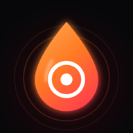

Kullanım Koşulları
DripOut'u ("Uygulama") kullanarak bu koşulları ve Apple'ın Standart Lisanslı Uygulama Son Kullanıcı Lisans Sözleşmesi'ni (EULA) kabul etmiş olursun. Bu sayfayla EULA arasında çelişki olursa EULA geçerlidir.
Uygulamanın yaptığı iş
Uygulama, telefon hoparlörünü belirli frekanslardaki seslerle titreştirerek ızgaradaki su damlalarını ve gevşek tozu dışarı atmaya yardımcı olur. Sonuç; cihaza, hoparlöre ve suyun ne kadar içeri girdiğine göre değişir. Uygulama bir onarım hizmeti değildir ve hoparlörünün düzeleceğini garanti etmez. İçine çok su kaçmış ya da arızalı bir cihaz için yetkili servise başvur.
Güvenli kullanım
- Başlamadan önce sesi kıs, sonra yavaşça aç.
- Kulaklık takılıyken kullanma ve telefonu kulağına yaklaştırma; yüksek ses işitmene zarar verebilir.
- Uygulamayı uzun süre en yüksek seste çalıştırma.
DripOut Pro ve abonelikler
- DripOut Pro; yıllık abonelik, haftalık abonelik veya tek seferlik "ömür boyu" satın alım olarak sunulur. Güncel fiyatlar satın alma ekranında, ülkenin para biriminde gösterilir.
- Ödeme, satın alımı onayladığında Apple Kimliği hesabından alınır.
- Ücretsiz deneme sunulan planlarda, deneme bitmeden iptal etmezsen abonelik seçtiğin ücretle otomatik olarak başlar.
- Abonelik, dönem bitiminden en az 24 saat önce iptal edilmezse aynı süre ve ücretle otomatik yenilenir; yenileme ücreti dönem bitiminden önceki 24 saat içinde tahsil edilir.
- Aboneliğini iPhone'da Ayarlar › [adın] › Abonelikler bölümünden yönetebilir ve iptal edebilirsin. İptal, mevcut dönemin sonunda geçerli olur.
- Ücretsiz denemenin kullanılmamış kısmı, abonelik satın aldığında sona erer.
- İade talepleri Apple'ın politikalarına tabidir ve reportaproblem.apple.com üzerinden yapılır.
- Satın alımını yeni bir cihazda kullanmak için uygulamadaki "Satın alımları geri yükle" düğmesini kullan.
Sorumluluğun sınırı
Uygulama "olduğu gibi" sunulur. Yürürlükteki hukukun izin verdiği ölçüde, uygulamanın kullanımından doğan dolaylı zararlardan sorumlu değiliz.
Değişiklikler
Bu koşulları güncelleyebiliriz; yeni tarihi bu sayfada yayınlarız.
İletişim
Terms of Use
By using DripOut (the "App") you agree to these terms and to Apple's Standard Licensed Application End User License Agreement (EULA). If this page conflicts with the EULA, the EULA prevails.
What the App does
The App plays tones at specific frequencies that vibrate your phone's speaker to help push water droplets and loose dust out of the grille. Results depend on the device, the speaker and how much water got inside. The App is not a repair service and does not guarantee that your speaker will be fixed. If a lot of water got inside or the device is damaged, contact an authorized service provider.
Safe use
- Turn the volume down before starting, then raise it slowly.
- Don't use it with headphones and keep the phone away from your ear; loud sound can damage your hearing.
- Don't run the App at maximum volume for long periods.
DripOut Pro and subscriptions
- DripOut Pro is offered as a yearly subscription, a weekly subscription, or a one-time "lifetime" purchase. Current prices are shown on the purchase screen in your local currency.
- Payment is charged to your Apple ID account when you confirm the purchase.
- For plans with a free trial, the subscription starts automatically at the selected price unless you cancel before the trial ends.
- Subscriptions renew automatically for the same period and price unless cancelled at least 24 hours before the end of the current period; renewal is charged within 24 hours before the period ends.
- You can manage or cancel your subscription in Settings › [your name] › Subscriptions on your iPhone. Cancellation takes effect at the end of the current period.
- Any unused portion of a free trial is forfeited when you purchase a subscription.
- Refunds are subject to Apple's policies and are requested at reportaproblem.apple.com.
- To use your purchase on a new device, tap "Restore purchases" in the App.
Limitation of liability
The App is provided "as is". To the extent permitted by applicable law, we are not liable for indirect damages arising from its use.
Changes
We may update these terms; the new date will be posted on this page.